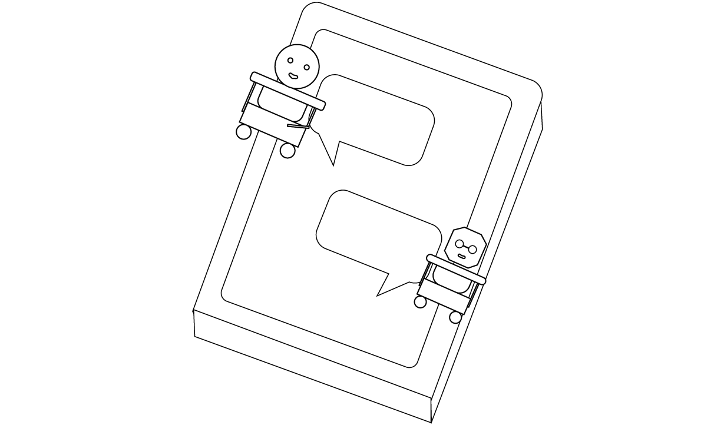

Brainstorming with AI: Does its personality matter?
Submitted to International Journal of Human-Computer Interaction
Groupwork has different productivity according to the personality combination. The goal
of the study is to see if same applies to the collaboration between humans and artificial intelligence (AI)
and if the extent varies according to
the extroversion level of the user.
Human-AI Brainstorming
Determining design factors of an AI agent
Brainstorming and cooperative idea generation have been a vital solution technique for many years.
A proven theory is that the group members' personlity type combination tremendously affects the work outcome and
efficiency.
An exploratory study examining whether the same applies to the human-AI collaboration is in grave need.
Extroverted and introverted AI chatbots
Experiment and analysis
Human collaboration factors were applied to designing the two AI chatbots, the extroverted and introverted
chatbots.
After we designed the experiment using the Wizard of Oz methodology, we observed the interactive differences of
the collaboration among extroverted and introverted collaborators.

Designing AI personas and observe the interactions between
extroverted and introverted users
Persona design, controlled experimet, wizard of Oz,
qualitative analysis, statistical analysis
Questionnaire design, documentation
Geonhee lee, Songyi Kim, Eunsol Choi, Younah Kang
“I think each party has its own strengths and weaknesses. If you work with an AI, you don’t have to worry about
your feelings, and it would be convenient to just talk about your ideas directly. But are they more creative
than humans? The question still remains.”
Observing whether creative work processes can extend into human–AI
collaboration.
Understanding human-AI collaboration
In this study, we investigate the brainstorming process of the human–AI agent (chatbot) and how the
personality traits of the human participants influence their experience of the brainstorming process with the
AI agent. We also observe whether existing factors from the human–human collaboration are equally important in
the process.
Persona Design
As the speaking styles of the conversational AI agents can reveal their personality
traits, many studies have used verbal characteristics to bestow different personalities on IVAs. We also
designed a conversational AI persona of a chatbot to show the following characteristics in the
brainstorming process.
Personality Traits
Design Element
Extrovert Bot
Introvert Bot
Verbosity
Verbose
High
Low
Empathy
Active agreement
High
Low
Criticism
Negation
Low
High
Cautiousness
Filled pause
Low
High
AI chatbot Design
Brainstorming influencing personality traits
Personality trait designation to extroverted and introverted chatbots
Experiments
Preliminary experiment
Participants go through NEO-BFM test to assess their extroversion
Wizard of Oz experiment and validation
Subsequent experiment
Participants watch videos on the chatbot collaboration
Assess the perceived efficiency and perceptions
We first designed the two personas of the AI agent (chatbot), focusing on the characteristics of extraversion.
The preliminary study’s aims included: (1) exploring how the extraversion personality trait influences the brainstorming process with the AI agent,
and (2) observing how participants with different levels of extraversion experience the brainstorming sessions with two different personas of the AI agent.
Extroverted bot
Divergent personality
An extroverted attitude that leads to active communication with coworkers.
AI agents with this personality show many propositions in utterance (verbosity) and begin the utterance with a confirmation of the propositions (explicit consent).
Introverted bot
Convergent personality
An introverted attitude provides criticism and enables a constructive conversation.
The introverted AI agent negates a verb by replacing its modifier with (negation) and inserting syntactic elements expressing hesitancy (filled pauses).
Preliminary Experiment
Design validation and observation
The experiment in the preliminary study followed a Wizard of Oz method; a human “wizard” performed the role “chatbot” instead of using the actual chatbots.
Therefore, participants brainstormed through chat messenger while both parties were in separate rooms. Furthermore, the participants communicated via texting with the AI agent without knowing that a human “wizard” was performing the AI role behind the scenes.
A few days before the experiment, the experimenter sent the participants a web address for the NEO-PI-R-based BFM personality type test to determine their personality type, especially their extroverted personality.
We recruited students aged 20 to 30, regardless of gender, from one university and conducted brainstorming experiments with 20 students.
Introvert impressions
As a result of the Big Five personality type test conducted before the experiment, 10 out of 20 participants showed a relatively introverted personality.
The introverted participants were less likely to show concern about what the coworker (i.e., the AI chatbots) thought about their ideas or how to persuade them.
“Obviously, if artificial intelligence pointed out my ideas to me, I would be less hurt and concerned than talking to people.
AI agents are much better and more efficient collaborators than humans in this respect. " (p. 9)
Extrovert impressions
Of the 20 participants, 10 showed a relatively extroverted personality type.
Extroverts thought that between the two personas of the AI chatbot, there was no difference in the coworking environment, their preference, or the perceived efficiency.
While they agreed that AI agents helped brainstorm, they thought that the AI chatbots lacked criticism, essential in generating ideas.
“Compared to people, I definitely didn’t feel distant, but at the same time, I didn’t joke around or try to be a friend like in real conversations with people.”
(p.1)
Validation of settings
After the experiment, 15 out of 20 participants (75%) said they thought the brainstorming process was with real AI agents. They did not realize a human wizard was behind them until the experimenter revealed the experimental method.
In addition, almost everyone seemed to have accepted the two AI personas, Di-bot and Co-bot, as they designed in the study.
“Di-bot seemed cheerful and talkative. You know, there is always one on the team who
talks a lot and lifts the mood. However, as this AI is designed for collaborative ideation, it not only talked a lot but also suggested lots of ideas. I hope to get one soon." (p.8).
Summary
First, we observed that people with introverted personalities interact more freely and without a burden in brainstorming with the AI chatbots, unlike conventional brainstorming with humans.
Second, we observed that the extroverted participants showed some differences in their experiences from the introverted people.
Extroverts felt that interaction with the AI chatbot was not satisfying enough because they thought the most important aspect of brainstorming was interacting with other humans.
Subsequent Experiment
Based on the findings from the first study, we designed the follow-up study to extend this area of investigation by a quantitative approach with a larger number of participants.
We designed the experiment where participants watched two brainstorming examples videos with the two AI personas and answered the questionnaire.
The videos showed a sample dialogue from a human–AI collaboration process, and they were created based on the actual conversation data from the preliminary experiment.
Then, we asked each participant to answer the questions after watching two consecutive videos that showed an example of the collaborative ideation process with the two AI personas.
The questionnaire consisted of 24 personality test questions and 18 experimental questions on a five-point Likert scale (1: strongly disagree, 2: disagree, 3: neither agree nor disagree, 4: agree, 5: disagree), distributed after each collaboration video.
Congruency
We checked whether they recognized the AI personas as we intended through the answers to the first five questions (Q25 to Q28)
Next, we performed a paired t-test to check the difference in the five questions (Q25 to Q28) using a total of 44 answer sheets.
From the results, we found a significant difference in Q26, Q27, and Q28 with a significance level of 0.05.
Introvert preference
Analogous to the preliminary results, introverts wanting liberation from coworkers’ evaluations and burdensome or unnecessary interactions during collaborations, introverts in the following experiment also preferred AI chatbots to humans and deemed it more efficient.
“I don’t know yet, but I thought it would be efficient because I hope that unnecessary energy between people, such as negative words and actions, will not appear. I think it will be more helpful in that sense.”
Extrovert preference
Extroverts preferred humans over AI chatbots because of the technical limitations of AI and because they prefer close interactions with other people during the brainstorming process.
“AI has a learned aspect, so it sees a specific case and applies it to the next. It would be a good choice if only I was trying to come up with an idea suitable for a certain project, but I like and value creative ideas and friendly conversations with people. I will use AI for my projects, but I don’t think it fits my personality very well.”
Summry
The study observed the characteristics of introverts and extroverts during the brainstorming process using the AI chatbot through the previous two experiments.
This study shed light on the possibility of utilizing AI chatbots to overcome the limitations of conventional human–human brainstorming, especially among introverts.
Discussions
AI chatbots could overcome the existing limitations of brainstorming.
In this study, participants showed they thought they had the following advantages in the brainstorming process through chatbots. First, it was easy to check the previous conversation history. Second, it was easy to grasp the entire conversation flow regardless of the speed of the conversation. Third, it was easy to organize their thoughts and continue the conversation before chatting.
Need for segmented research depending on the purpose of AI collaboration.
Given that some participants responded positively to the sympathetic attitude of the AI agent, determining which characteristics are best suited to such a purpose needs further research.
Limitations and future research direction.
Wizard of Oz experiments are less likely to be distorted, but there still exist limitations.
Designing an AI agent capable of an actual collaboration process suited for particular conversations for the brainstorming process is immediately feasible by employing different scenarios.